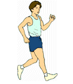
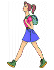

|  |  |
Cassie and her big brother, Charlie, like right triangles. One day they decided to walk along the legs and hypotenuse of a right triangle, doing so in the following manner.Starting at the same point, Cassie walked 5 kilometers straight north, while Charlie walked 12 kilometers straight east. Then each turned and walked towards each other along the hypotenuse, stopping when they met. It is also important to note that they walked at the same speed.
Your task is to determine the coordinates of the point where they are now standing.
Hint: Consider their starting point as the origin (0, 0) of a coordinate grid.
Extra: If Charlie walked twice as fast as his little sister, thereby covering twice as much distance, what would be the coordinates of their meeting point now?
| Comments? Send e-mail. | Back to top | Go back to Home Page | Go back to Contents |